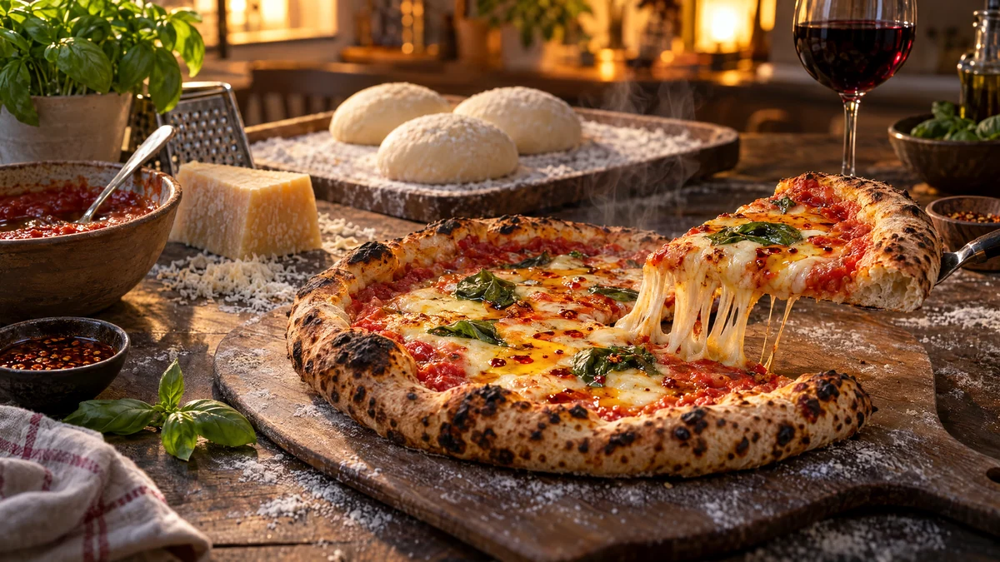

RESTFEST · RECEPTGrundrecept
Pizzadeg med kall jäsning
Mjöl, vatten, en nypa jäst och salt. Degen jäser långsamt i kylen i ett till tre dygn och blir luftig, smakrik och lätt att forma, med krispig botten och bubbliga, lätt brända kanter. En deg, fyra pizzor och ett sätt att göra fredagsmys av kylskåpets rester.
- Förberedelse
- 20 min + 1 tim jäsning + 1–3 dygn i kylen
- Tillagning
- 6–8 min per pizza
- Portioner
- 4 pizzor
- Nivå
- Medelsvårt
 Det här behöver du
Det här behöver du
Tryck på + vid det du behöver köpa.
Deg
Snabb tomatsås
Gör så här
- Smula ner jästen i vattnet och rör tills den har löst sig. Använder du torrjäst, blanda den med mjölet i stället.
- Tillsätt mjöl och salt och arbeta ihop till en deg. Knåda den på bakbordet i 8–10 minuter, tills den är slät och elastisk. Knåda in olivoljan de sista minuterna.
- Lägg degen i en oljad bunke, täck den och låt jäsa i rumstemperatur i 1 timme.
- Dela degen i 4 delar, ca 170 g var. Forma släta bollar genom att vika kanterna in mot mitten. Lägg dem i en oljad låda med lock.
- Ställ degbollarna i kylen i 24–72 timmar. Ju längre de står, desto mer smak.
- Ta fram degen 2 timmar före gräddningen. Ställ en plåt upp och ner, eller en baksten, på nedersta falsen och sätt ugnen på högsta värme, 250–275 grader, i minst 30 minuter.
- Rör ihop krossade tomater, olivolja och salt till såsen. Den ska inte kokas.
- Tryck ut en degboll med fingertopparna på ett mjölat bakbord, från mitten och utåt, och lämna en tjock kant. Dra den försiktigt till ca 28 cm. Använd inte kavel, den trycker ut luften.
- Lägg degen på ett bakplåtspapper, bred på ett tunt lager sås och din topping, och dra över pizzan till den heta plåten. Grädda i 6–8 minuter, tills kanten är bubblig och gyllene med mörka fläckar.
Användning och tips
- Toppa med kylskåpets rester: ostkanter, skinka, stekt svamp, rostad lök eller resterna av söndagssteken.
- Ringla över chilioljan i recept 50 eller peston i recept 51 när pizzan kommer ut ur ugnen.
- Degbollarna kan frysas efter steg 4. Tina dem i kylen över natten.
- Snåla med toppingen, för mycket gör botten blöt.
Mått och ugnstemperaturer
Måtten är svenska (dl, msk, tsk, krm). Ugnstemperaturerna gäller vanlig ugn med över- och undervärme; med varmluft, sänk med 20 grader.